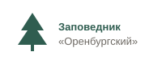

Бузулукский бор
Категория: Природный объект
Автор: Анна Смирнова
Координаты: 52.95° с. ш., 52.30° в. д.
Фото: 18
Район: Бузулукский район
ПодробнееПлатформа для туристов, краеведов и фотографов. Делитесь достопримечательностями Оренбургской области и находите новые места для путешествий
Стать авторомУдобная загрузка фотографий
Точные координаты на карте
Подробные описания от местных жителей
Актуальная информация и отзывы путешественников
Категория: Природный объект
Автор: Анна Смирнова
Координаты: 52.95° с. ш., 52.30° в. д.
Фото: 18
Район: Бузулукский район
Подробнее
Категория: Природный объект
Автор: Дмитрий Козлов
Координаты: 51.16° с. ш., 54.99° в. д.
Фото: 24
Район: Соль-Илецкий городской округ
Подробнее
Категория: Памятник архитектуры
Автор: Краеведческий музей
Координаты: 51.76° с. ш., 55.10° в. д.
Фото: 12
Район: г. Оренбург
Подробнее
Категория: Природный объект
Автор: Сергей Волков
Координаты: 51.30° с. ш., 57.80° в. д.
Фото: 15
Район: Гайский городской округ
Подробнее
Категория: Природный объект
Автор: Мария Иванова
Координаты: 51.75° с. ш., 55.08° в. д.
Фото: 20
Район: г. Оренбург
Подробнее